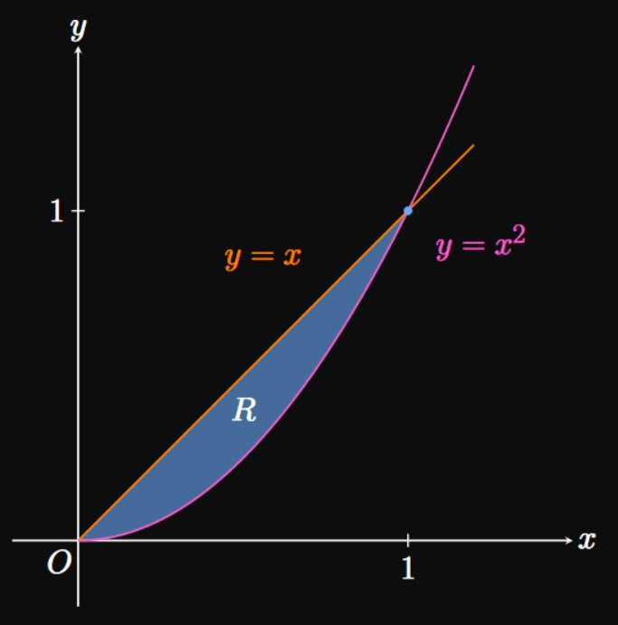
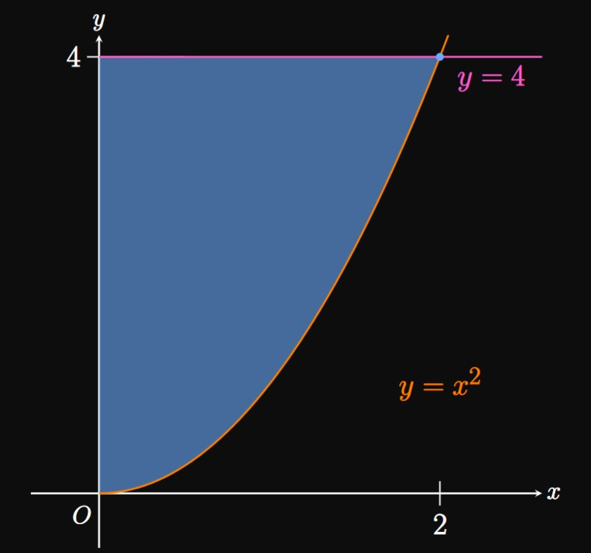
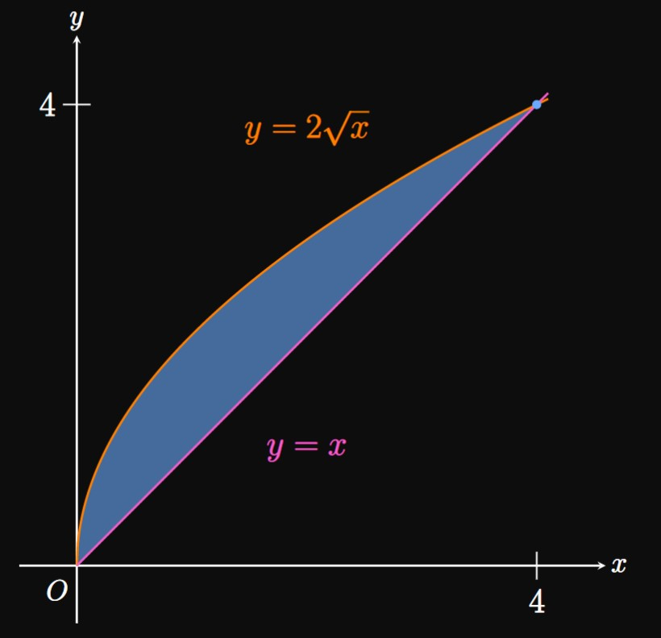
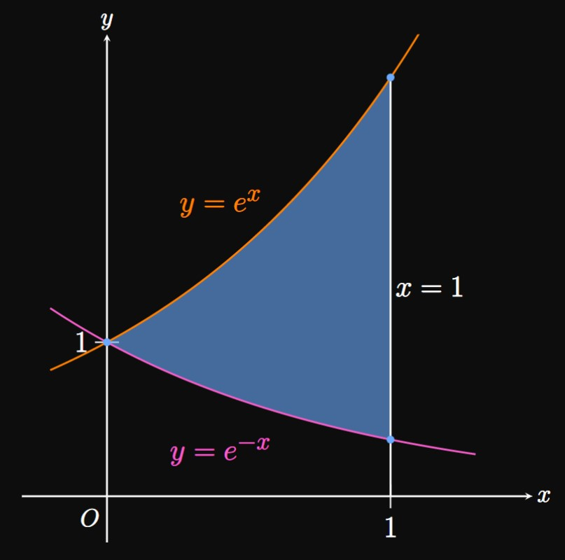
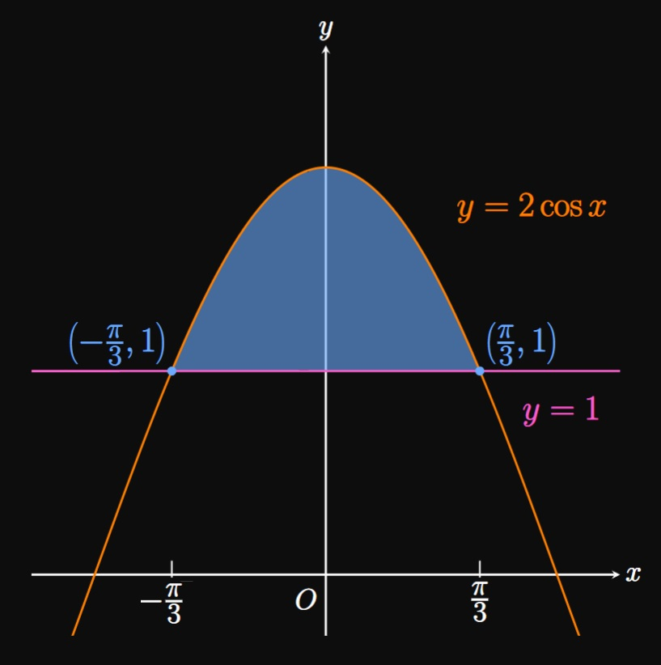
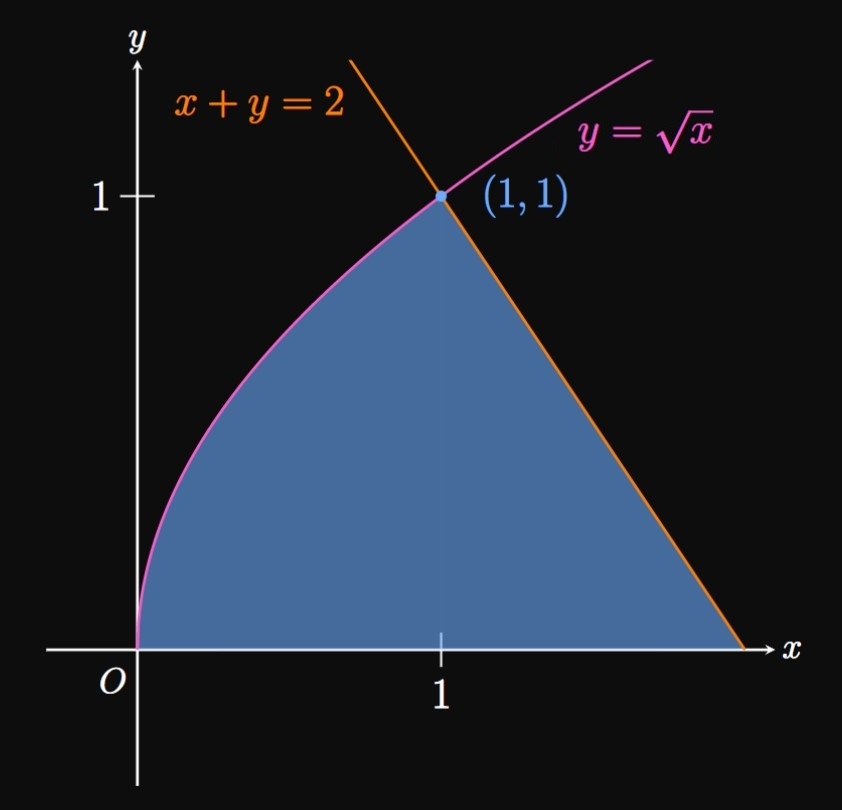

Suppose \(f(x) \geq g(x)\) for all \(x\) in \([a, b].\)
Use an integral to express the area bounded by \(y = f(x),\) \(y = g(x),\)
and the lines \(x = a\) and \(x = b.\)
SOLUTION
We integrate the top function minus the bottom function from \(x = a\) to \(x = b.\)
The area is
\begin{equation}
A = \int_a^b f(x) - g(x) \di x \pd \label{eq:area-x}
\end{equation}
EXERCISE 2
Let \(f(y) \geq g(y)\) for all \(y\) in \([c, d].\)
What is the area bounded by \(x = f(y),\) \(x = g(y),\)
and the lines \(y = c\) and \(y = d \ques\)
SOLUTION
We integrate the right function minus the left function from \(y = c\) to \(y = d.\)
We integrate with respect to \(y \col\)
\begin{equation}
A = \int_c^d f(y) - g(y) \di y \pd \label{eq:area-y}
\end{equation}
EXERCISE 3

Let region \(R\) be bounded by the parabola \(y = x^2,\) the line \(y = x,\)
the \(x\)-axis, and the \(y\)-axis (Figure 1).
Note that the two functions intersect at the origin and \((1, 1).\)
In terms of \(x,\) write an integral whose value gives the area of region \(R.\)
Find an integral in terms of \(y\) that gives the area of \(R.\)
Evaluate your answers to parts (a)
and (b).
What do you notice?
SOLUTION
We note that \(x \geq x^2\) for all \(x\) in \([0, 1].\)
Accordingly, we integrate the top function \(x\) minus the bottom function \(x^2\) from \(x = 0\) to \(x = 1,\)
using \(\eqref{eq:area-x} \col\)
\[A = \int_0^1 x - x^2 \di x = \par{\tfrac{1}{2} x^2 - \tfrac{1}{3} x^3} \intEval_0^1 = \boxed{\tfrac{1}{6}}\]
To integrate with \(y,\) we need to ensure that \(R\) is bounded by the same two functions over the entire region.
The right boundary is \(y = x^2\) and the left boundary is \(x;\)
these two functions cover the entire region \(R.\)
We need both functions in terms of \(y,\)
so we write \(y = x^2\) as \(x = \sqrt y.\)
Then we integrate from \(y = 0\) to \(y = 1,\) using \(\eqref{eq:area-y}\)
(integrating the right function minus the left function):
\[
\ba
A &= \int_0^1 \sqrt y - y \di y \nl
&= \par{\tfrac{2}{3} y^{3/2} - \tfrac{1}{2} y^2} \intEval_0^1 \nl
&= \tfrac{2}{3} - \tfrac{1}{2} = \boxed{\tfrac{1}{6}}
\ea
\]
The answers in both parts are the same.
This shows that we have the freedom to choose to integrate using either \(x\) or \(y,\)
as we should obtain the same result.
But sometimes one method is easier than another,
so it's important to remain flexible.
EXERCISE 4
For
\[y = x^2 \cma y = 4 \cma x = 0\]
calculate the area bounded by the equations.
SOLUTION

This region is in the first quadrant,
bounded above by the line \(y = 4\) and below by the parabola \(y = x^2.\)
The two functions intersect at \((2, 4).\)
It is easy to integrate either with \(x\) or \(y.\)
If we integrate with \(x,\)
then the integrand is the top function \((y = 4)\)
minus the bottom function \((y = x^2)\) from \(x = 0\) to \(x = 2\)—namely,
\[A = \int_0^{2} 4 - x^2 \di x \pd\]
With \(y,\) we rewrite \(y = x^2\) as \(x = \sqrt y.\)
We integrate the right-bounding function \(x = \sqrt y\)
minus the left-bounding function, the line \(x = 0.\)
This gives
\[A = \int_0^4 \sqrt y - 0 \di y \pd\]
Either setup confers the answer of \(\boxed{16/3}.\)
EXERCISE 5
For
\[y = 2 \sqrt x \cma y = x\]
calculate the area bounded by the equations.
SOLUTION

This region is in the first quadrant,
bounded above by \(y = 2 \sqrt x\) and below by the line \(y = x.\)
The two functions intersect at \((4, 4)\) if we solve \(2 \sqrt x = x.\)
Integrals with \(x\) or \(y\) are easy to write.
If we integrate with \(x,\)
then the integrand is the top function \((y = 2 \sqrt x)\)
minus the bottom function \((y = x)\) from \(x = 0\) to \(x = 4\)—that is,
\[A = \int_0^{4} 2 \sqrt x - x \di x \pd\]
If we integrate with \(y,\) then we rewrite \(y = 2 \sqrt x\) as \(x = (y/2)^2.\)
We integrate, from \(y = 0\) to \(y = 4,\) the right-bounding function \(x = y\)
minus the left-bounding function \(x = (y/2)^2.\)
This gives
\[A = \int_0^4 y - \par{\tfrac{y}{2}}^2 \di y \pd\]
Either method gives the answer of \(\boxed{8/3}.\)
EXERCISE 6
For
\[y = e^x \cma y = e^{-x} \cma x = 0, x = 1\]
calculate the area bounded by the equations.
SOLUTION

We observe that the area is bounded above by \(y = e^x,\)
below by \(y = e^{-x},\) and right by \(x = 1.\)
It is easiest to integrate with \(x\) because the upper and lower boundaries do not change
anywhere in our region.
The region goes from \(x = 0\) to \(x = 1,\) so by \(\eqref{eq:area-x}\) the area is
\[
\ba
A &= \int_0^1 e^x - e^{-x} \di x \nl
&= \par{e^x + e^{-x}} \intEval_0^1 \nl
&= \boxed{e + \tfrac{1}{e} - 2} \approx 1.086 \pd
\ea
\]
EXERCISE 7
For
\[\ds y = 2 \cos x \cma y = 1\]
calculate the area bounded by the equations.
SOLUTION

The bounded region is in the first and second quadrants,
with the upper boundary of \(y = 2 \cos x\)
and lower boundary of \(y = 1.\)
The two functions intersect at the points \((-\pi/3, 1)\) and \((\pi/3, 1).\)
If we choose to integrate with \(x,\) then our integral is
\[A = \int_{-\pi/3}^{\pi/3} 2 \cos x - 1 \di x \pd\]
Or we could realize that the region is symmetric about the \(y\)-axis, so the area is
twice the area of one region:
\[A = 2 \int_0^{\pi/3} 2 \cos x - 1 \di x \pd\]
Evaluating the integral gives
\[2 \par{2 \sin x - x} \intEval_0^{\pi/3} = \boxed{2 \sqrt 3 - \tfrac{2}{3} \pi} \approx 1.368 \pd\]
It is important to recognize symmetries because they permit easier problem-solving.
Choosing to integrate with \(y\) is very difficult, so we omit that setup.
EXERCISE 8
For
\[\ds y = \sqrt x \cma x + y = 2 \cma y = 0\]
calculate the area bounded by the equations.
SOLUTION

Drawing a sketch, we observe that the area
is bounded left by \(y = \sqrt x,\) right by \(x + y = 2,\)
and below by the \(x\)-axis (or the line \(y = 0\)).
The former two equations intersect at the point \((1, 1).\)
It is easiest to integrate with \(y\) because the region is bounded by the same side boundaries,
whereas the upper boundary switches from \(y = \sqrt x\) to \(x + y = 2\)
as we cross \(x = 1.\)
In committing to \(y,\) we express all quantities in terms of \(y.\)
We have
\[x = 2 - y \and x = y^2 \pd\]
The right function is \(x = 2 - y\) and the left function is \(x = y^2.\)
The region goes from \(y = 0\) to \(y = 1,\) so our integral is
\[A = \int_0^1 (2 - y) - y^2 \di y \pd\]
If we instead choose to integrate with \(x,\) then we split the region at \(x = 1\)
and sum up the areas of the subregions.
The subregion left of \(x = 1\) is bounded above by \(y = \sqrt x,\)
while the right subregion is bounded above by \(y = 2 - x.\)
So the sum of the subregions' areas is
\[A = \int_0^1 \sqrt x \di x + \int_1^2 2 - x \di x \pd\]
[We also could have written the integrands as \(\sqrt x - 0\) and \((2 - x) - 0\)
since the lower boundary function is \(y = 0.\)]
Both integral setups give the answer \(\boxed{7/6}.\)
EXERCISE 9
A line in the first quadrant intersects
the graph of \(y = \sqrt x\) when \(x = 4\)
at an angle of \(90 \degree.\)
Calculate the area of the region bounded between these curves and the \(x\)-axis.
SOLUTION
The slope to \(y = \sqrt x\) when \(x = 4\) is given by
\[\deriv{}{x} \sqrt x \intEval_{x = 4} = \frac{1}{2 \sqrt 4} = \frac{1}{4} \pd\]
Thus, the line perpendicular to the curve has slope \(-4.\)
An equation of this line is therefore
\[y - \sqrt 4 = -4(x - 4) \or y = -4x + 18 \pd\]
From \(x = 0\) to \(x = 4,\) the region is
bounded above by \(y = \sqrt x\) and below by the \(x\)-axis.
This area is
\[\int_0^4 \sqrt x \di x = \tfrac{2}{3} x^{3/2} \intEval_0^4 = \tfrac{2}{3} (8) = \tfrac{16}{3} \pd\]
Additionally, the region bounded above by the line \(y = -4x + 18,\)
below by the \(x\)-axis, and left by the line \(x = 4\) is a triangle
of height \(2\) and base \(1/2.\)
The triangle's area is therefore \(\tfrac{1}{2} \par{2 \cdot \tfrac{1}{2}}\)
\(= \tfrac{1}{2}.\)
Hence, the total area of the region is
\[\tfrac{16}{3} + \tfrac{1}{2} = \boxed{\tfrac{35}{6}}\]